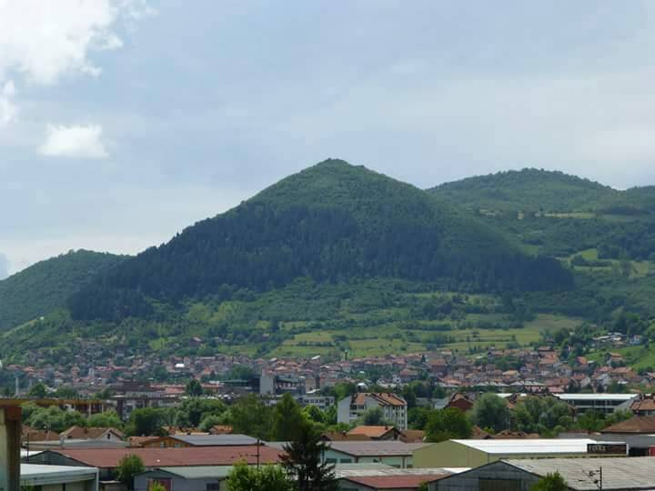

Bosnian "pyramids"
Visoko, Bosnia and Herzegovina

DISPUTED: since 2005, businessman Semir Osmanagić has promoted Visočica hill as the world's largest pyramid. Geologists and archaeologists say the hills are natural formations, and European archaeology groups have called the project a hoax. 1
Open in the interactive Watcher
Sources
- Bosnian pyramid claims Wikipedia